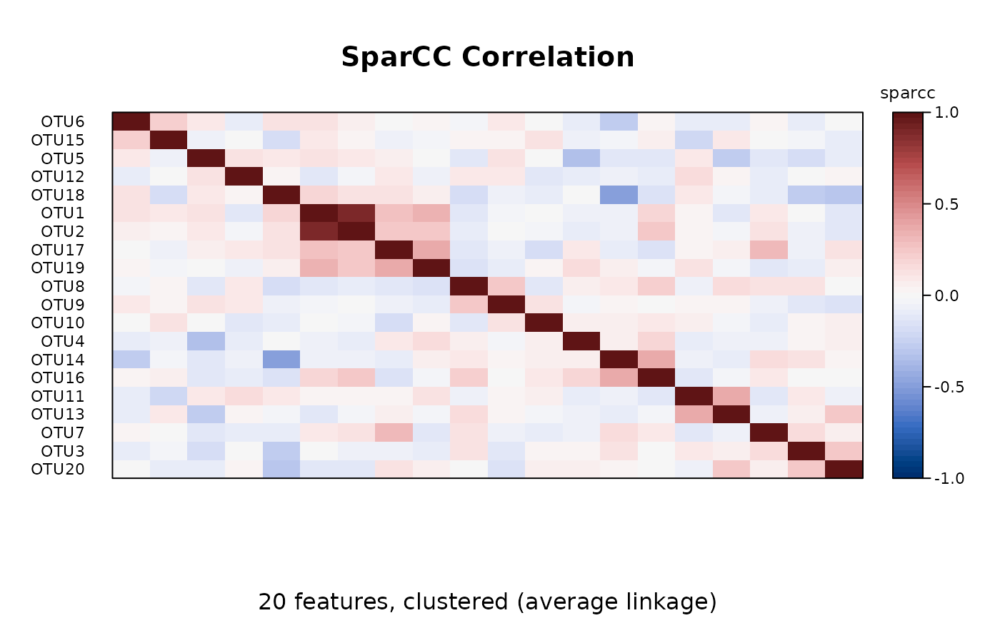

Estimates the correlations between the log absolute abundances of features from their relative abundances alone, with SparCC (Friedman & Alm 2012): the "co-occurrence network" correlations most often reported for microbiome data. They can be estimated only approximately, by assuming that most pairs of features are uncorrelated and that there are many features.
Usage
sparcc(
counts,
margin = 1L,
n_draws = 100L,
max_exclusions = 20L,
exclusion_threshold = 0.1,
permutations = 0L,
clust = NULL,
seed = 0L,
cpus = n_cpus()
)Arguments
- counts
A numeric matrix of raw counts (samples \(\times\) features), or any of the objects listed under Input Types. Correlations are taken between the features (the columns when
margin = 1), and need at least 4 features and 3 samples. Use the counts as sequenced, not proportions, rarefied or zero-replaced values: the uncertainty that SparCC allows for depends on their size (see Details). Values that are not whole numbers are used as they are, with a warning.- margin
The margin containing samples.
1if samples are rows,2if samples are columns. Ignored whencountsis a special object class (e.g.phyloseq). Default:1- n_draws
How many draws of the samples' fractions to take from their Dirichlet posterior. The result is each pair's median over the draws. Default
100L, as in the paper.- max_exclusions
At most how many strongly correlated pairs to exclude, one at a time, when estimating the features' variances.
0Lexcludes none (the "basic" SparCC). Default20L, as in the paper.- exclusion_threshold
A pair is strongly correlated, and may be excluded, when the absolute value of its correlation is above this. Default
0.1, as in the paper.- permutations
How many null datasets to make for p-values:
0L(the default) for none. Each null dataset resamples every feature's counts across the samples on its own, and is run through all of SparCC with the same settings, so this multiplies the run time bypermutations + 1. See P-values.- clust
Whether and how to cluster the features (rows and columns) of the result, as for
vlr()(seebeta_div()'sclust). The correlations are clustered as the dissimilarities \(1 - r\).- seed
An integer seed for the random draws and resampling. The same
seedgives the same results, for any number ofcpus.- cpus
How many parallel processing threads should be used. The default,
n_cpus(), will use all logical CPU cores.
Value
A dist object over the features (the packed lower
triangle, as rho_p() returns), labelled with the feature names, of
class c("ecodive_dist", "dist"), so that plot() draws it as a
heatmap (plot.ecodive_dist()). Besides dist's Size, Labels,
Diag and Upper, its attributes are:
method:"sparcc".n_samples: the number of samples.variances: the estimated variance of each feature's log basis abundance (\(\omega^2\)), its median over the draws, named by feature and in the order of the result's labels.p_value: withpermutations > 0, one two-sided permutation p-value per pair, parallel to the triangle (same length and order:p_value[k]belongs tox[k]). Not adjusted for testing every pair: seestats::p.adjust().display: the title for plots and printing,"SparCC Correlation", and theclustit was made with (see ecodive_display).order: withclust, each feature's position in the input.
The correlations are a similarity in a dist container:
as.matrix() puts 0 on the diagonal, where they are 1, and they must
not be given as dm to an ordination or test. To find strongly
associated pairs, threshold them: which(abs(r) > 0.3) gives their
positions in the triangle, and abs(as.matrix(r)) > 0.3 an adjacency
matrix. For a dissimilarity, use 1 - r. With p-values,
p <- p.adjust(attr(r, "p_value"), "BH") adjusts them for testing
every pair, and r[p <= 0.05] keeps the significant pairs.
Details
What is estimated. Let \(y_i\) be the log of feature \(i\)'s
unobserved absolute abundance (the "basis"), with variance
\(\omega_i^2\). The variance of a log ratio is the same for relative
and absolute abundances:
$$t_{ij} = \mathrm{var}\left(\log\frac{x_i}{x_j}\right) =
\omega_i^2 + \omega_j^2 - 2\rho_{ij}\omega_i\omega_j$$
(the variation matrix, as vlr()). SparCC solves this for the
correlations \(\rho_{ij}\) of the \(y\). With \(D\) features there
are more unknowns than equations, so it assumes that most correlations
are about 0: then \(t_i = \sum_{j \ne i} t_{ij} \approx (D - 2)
\omega_i^2 + \sum_j \omega_j^2\), which gives the variances, and
$$\rho_{ij} = \frac{\omega_i^2 + \omega_j^2 - t_{ij}}{2 \omega_i
\omega_j}.$$
The pair with the largest \(|\rho|\) above exclusion_threshold is
then left out of these sums, the variances are estimated again, and so
on, at most max_exclusions times.
The approximation is better with more features, and when most pairs are truly uncorrelated. As a rule of thumb, Friedman & Alm (2012) ask for an effective number of features (a measure of how evenly abundant they are) of at least about 50 before ordinary correlations of relative abundances can be trusted, and show SparCC to be more robust to fewer. Values beyond \(\pm 1\) are possible when too many pairs are excluded for the variances to be estimated well, and are kept with a warning.
Zeros and counting noise. The fractions of each sample are not
taken as observed: they are drawn n_draws times from their posterior
given the counts, \(\mathrm{Dirichlet}(N_s + 1)\) (a uniform prior,
so every count gets 1 added), and SparCC is run on each draw's log
fractions. The result is each pair's median over the draws. This
handles zeros without a pseudocount, and lets rare features, whose
fractions are uncertain, show weaker correlations. It is why raw counts
are needed.
Why not rho_p()? Both start from the variation matrix \(t_{ij}\)
(vlr()), but they scale it differently and answer different questions.
\(\rho_p = 1 - t_{ij} / (v_i + v_j)\), with \(v_i\) the variance of
the clr coordinate, needs no assumption, but is 1 only when the two
features keep a constant ratio (proportionality): it asks "do these two
keep a constant ratio?". SparCC replaces \(v_i\) with the estimated
basis variances, and asks "are their absolute abundances correlated?",
which can be answered only under its sparsity assumption. Pairs related
by a power law with an exponent other than 1, or with unequal
variances, have a high SparCC correlation but a low \(\rho_p\).
P-values
With permutations = B, each null dataset resamples the counts of
every feature across the samples with replacement, independently of
the other features, as FastSpar's fastspar_bootstrap does: all
features are then uncorrelated, and each keeps the distribution of its
counts. SparCC is run on each
one with the same settings (and draws of its own), and a pair's
p-value is the fraction of the \(B + 1\) datasets, the observed one
included, whose correlation is at least as large in absolute value:
\((1 + k) / (B + 1)\) when \(k\) of the null correlations have
\(|r_b| \ge |r|\). It is never 0 (Phipson & Smyth 2010), as FastSpar
computes it; the paper used the fraction of the null datasets alone.
This runs SparCC \(B + 1\) times, each with n_draws draws. When
that is too slow, a smaller n_draws (such as 20L) for the whole
call is better than fewer permutations: the null datasets then have the
same Monte Carlo noise as the observed one, so the test stays valid.
The smallest possible p-value is \(1 / (B + 1)\), so many
permutations are needed to survive an adjustment for testing every
pair (for 1,000 pairs and Bonferroni at 0.05, \(B \ge 20000\)).
Other implementations
FastSpar's --iterations, --exclude_iterations and --threshold
(Watts et al. 2019; defaults 50, 10 and 0.1), and SpiecEasi's
sparcc(iter, inner_iter, th) (defaults 20, 10 and 0.1), are
n_draws, max_exclusions and exclusion_threshold. With the same
values, results agree with both to within the noise of the random
draws, which no two implementations share (about 0.002 for counts in
the thousands and 100 draws), with one exception: FastSpar makes at
most \(D - 3\) exclusions, so with fewer than max_exclusions + 3
features, give max_exclusions = D - 3 to reproduce it. SpiecEasi has
no such limit, like ecodive. Otherwise:
ecodive draws with its own generator (PCG), so results are the same on every platform and for any number of
cpus.Each pair's result is the median of its values over the draws (the mean of the middle two for an even number of draws).
Within a draw, a feature whose estimated variance is not positive has no correlations; they are left out of the medians, with a warning giving how often it happened.
With
exclusion_threshold = 0, pairs whose correlation is 0 but for rounding error can be excluded, until a feature has no pair left (it is then left out of that draw) or the pairs still included no longer determine the variances. The loop then stops, when fewer than 4 features are left or before that last exclusion. With any positive threshold this can't happen: such pairs' correlations are exactly 0.The p-values are FastSpar's: its resampling, and its estimate \((1 + k) / (B + 1)\). SpiecEasi's
sparccboot()permutes each feature's counts instead.
Same names in other packages
SpiecEasi::sparcc() computes the same estimate, with other defaults
(see Other implementations).
Size
The result has \(D(D - 1)/2\) values: 2,000 features give 2e6 pairs, 16 MB. Every value of the table is drawn, so each thread works on a dense copy (\(n \times D\) values) and the \(D(D - 1)/2\) log-ratio variances of one draw at a time. The medians need every draw's value of a pair: up to 256 MB of them are kept at once, and beyond that the pairs are taken in blocks, each one drawing again (with the same numbers), which takes longer. Filter out rare features first for large tables.
Input Types
The counts parameter is designed to accept a simple numeric matrix, but
seamlessly supports objects from the following biological data packages:
phyloseqrbiomSummarizedExperimentTreeSummarizedExperiment
For large datasets, standard matrix operations may be slow. See
vignette('performance') for details on using optimized formats
(e.g. sparse matrices) and parallel processing.
References
Friedman, J., & Alm, E. J. (2012). Inferring correlation networks from genomic survey data. PLoS Computational Biology, 8, e1002687. doi:10.1371/journal.pcbi.1002687
Phipson, B., & Smyth, G. K. (2010). Permutation p-values should never be zero: calculating exact p-values when permutations are randomly drawn. Statistical Applications in Genetics and Molecular Biology, 9, 39. doi:10.2202/1544-6115.1585
Watts, S. C., Ritchie, S. C., Inouye, M., & Holt, K. E. (2019). FastSpar: rapid and scalable correlation estimation for compositional data. Bioinformatics, 35, 1064–1066. doi:10.1093/bioinformatics/bty734
See also
rho_p(), proportionality of features; vlr(), the variation
matrix; plot.ecodive_dist().
Examples
# 60 samples of 20 taxa, whose first two are correlated
set.seed(1)
basis <- matrix(rnorm(60 * 20), 60, 20)
basis[, 2] <- basis[, 1] + rnorm(60, sd = 0.3)
counts <- matrix(
rpois(1200, exp(basis + 4)), 60, 20,
dimnames = list(NULL, paste0('OTU', 1:20)) )
r <- sparcc(counts, n_draws = 20)
r
#> # A dist: 20 features (lower triangle)
#> # SparCC Correlation
#> OTU1 OTU2 OTU3 OTU4 OTU5 OTU6 OTU7 OTU8
#> OTU2 0.881
#> OTU3 -0.0154 -0.0979
#> OTU4 -0.0716 -0.0905 0.0221
#> OTU5 0.128 0.086 -0.225 -0.317
#> OTU6 0.132 0.0455 -0.101 -0.079 0.0509
#> OTU7 0.0813 0.128 0.146 -0.0782 -0.132 0.0211
#> OTU8 -0.117 -0.0819 0.114 0.0399 -0.111 -0.0286 0.14
#> OTU9 -0.0337 0.0137 -0.119 -0.031 0.111 0.0896 -0.044 0.251
#> OTU10 0.00363 -0.0297 0.027 0.0496 0.00663 -0.00212 -0.0905 -0.114
#> OTU11 0.0427 0.0515 0.0776 -0.114 0.0735 -0.106 -0.0993 -0.0518
#> OTU12 -0.126 -0.0381 0.0173 -0.0823 0.117 -0.0926 -0.0744 0.0924
#> OTU13 -0.109 -0.045 0.0555 -0.0617 -0.319 -0.103 -0.0733 0.152
#> OTU14 -0.0595 -0.0447 0.124 0.0579 -0.116 -0.267 0.138 0.0975
#> OTU15 0.0737 0.0259 -0.0113 -0.0556 -0.0472 0.195 0.000363 0.0437
#> OTU16 0.189 0.245 -0.00782 0.188 -0.134 0.0415 0.114 0.252
#> OTU17 0.266 0.252 -0.0634 0.0958 0.0484 -0.0088 0.33 -0.107
#> OTU18 0.166 0.123 -0.276 -0.00189 0.0933 0.115 -0.103 -0.175
#> OTU19 0.327 0.249 -0.0904 0.159 -0.00187 0.0405 -0.104 -0.151
#> OTU20 -0.134 -0.116 0.255 0.0557 -0.0885 -0.0103 0.0485 -0.00439
#> # … 11 more columns: OTU9, OTU10, OTU11, OTU12, OTU13, OTU14, OTU15, OTU16,
#> # OTU17, OTU18, OTU19
#> # Attributes: method, n_samples, variances
# Each taxon's estimated log-abundance variance
attr(r, 'variances')
#> OTU1 OTU2 OTU3 OTU4 OTU5 OTU6 OTU7 OTU8
#> 0.7792122 0.8087898 1.0334507 1.2641927 0.8572549 0.9803022 0.9279604 1.2529551
#> OTU9 OTU10 OTU11 OTU12 OTU13 OTU14 OTU15 OTU16
#> 1.5061214 0.9513477 1.1760719 1.2033259 1.4160847 1.4792558 1.0648909 1.0381287
#> OTU17 OTU18 OTU19 OTU20
#> 1.5975580 0.8801285 1.0327013 1.3007508
# Pairs above a cutoff
m <- as.matrix(r)
which(abs(m) > 0.5 & upper.tri(m), arr.ind = TRUE)
#> row col
#> OTU1 1 2
# With p-values from 99 null datasets
r <- sparcc(counts, n_draws = 10, permutations = 99)
head(attr(r, 'p_value'))
#> [1] 0.01 0.99 0.46 0.29 0.28 0.61
plot(r)
